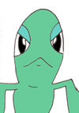
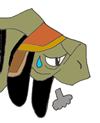

Zoah Beliefs
The Village Code
Wise Old Coolia: The children of Zoah can only be raised if they have been approved by the Council. This is the Holy District code, and a very strong belief. The people must live with limited blessings, a cruel way to control the population.  Young Energetic Coolia: That's just not right, what do they do with the children who don't get approved by the Council!?  Wise Old Coolia: I guess they are banished from the Town of Zoah, to fend for themselves in the outside world, a cruel fate. |
This little girl was lucky to be excepted by the Council. Unlike her, unexcepted children were cast out, to survive on their own. |


Blessings from the Gods
Wise Old Coolia: The citizens of Zoah believe the consumption of food outside of the Forest of Zoah such as: monster meat, and other impure foods, is a sin. It is food abandoned by the Gods. Provisions from the forest, are blessings from the Gods. The Holy District believes these blessings are for the people alone. Sharing with outsiders is stricktly prohibited.
Young Energetic Coolia: What kinds of foods come from the Forest of Zoah?
Wise Old Coolia: Well, there are Zaal Nuts, Utsumi Fruit, Hammond Fruit, edible plants called Zoah Harvest, Dried meat from various forest creatures, and grain. Just be sure not to eat any of the food here in Zoah, because us Coolias are considered outsiders, since we didn't originally grow up here. Young Energetic Coolia: Praise the Gods! This is great stuff! What were you saying?
Wise Old Coolia: You idiot, what did I just say?!! We better get out of here before they kill us! |
The Forest of Blessings. |
Zaal Nuts are very valuable in Zoah. |
This is an Utsumi bush, although I have no idea what the fruit looks like. |
These edible plants are called Zoah Harvest. |
If you look closely, you will notice Hammond Fruit is round in shape and resembles an Orange. |
This is dried meat from the Forest of Zoah. |
A massive amount of grain. |


The Night of Atonement
Wise Old Coolia: On the Night of Atonement, a night of prayer, the citizens of Zoah believe all of their sins will be repented, and they will be purified. All citizens must fast and can only consume purified water. The people are to purify themselves with holy water until sunset. Only cloths woven from the sacred materials of the Forest of Blessings, may be warn. They must also conceal themselves in darkness. All those who create a fire of their own, consume food before prayer, or wear filthy clothing, will be banished from the holy land of Zoah.
Young Energetic Coolia: But, I'm afraid of the Dark!! Wise Old Coolia: I quess you wouldn't last long in the Town of Zoah, now would you. |
Citizens of Zoah lock themselves in their houses, concealed in total darkness, on the Night of Atonement. |